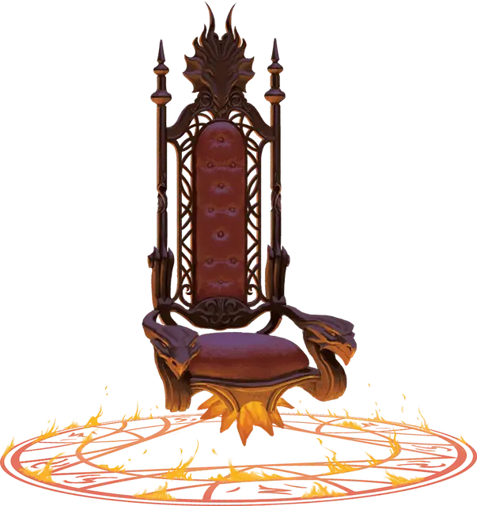

Магический руль
Spelljamming Helm
Чудесный предмет, редкий (требуется настройка заклинателем)

Рекомендованная стоимость 7 500 зм
Задача этого богато украшенного сиденья заключается в том, чтобы в воздухе и космосе управлять перемещением корабля, на котором оно установлено. Сиденье также может управлять кораблём и перемещать его по воде или под водой, если он предназначен для подобных перемещений. Такой корабль должен весить не менее 1 тонны.
Ощущение настройки на магический руль похоже на покалывание, которые вы испытываете, когда затекает рука или нога, но менее болезненно.
Пока вы настроены на магический руль и сидите на нём, вы получаете следующие преимущества, пока поддерживаете концентрацию (как если бы вы концентрировались на заклинании):
- Вы можете использовать магический руль для перемещения корабля по космосу, воздуху или воде на расстояние вплоть до скорости корабля. Если корабль находится в космосе, и в пределах 1 мили от него нет других объектов весом как минимум в 1 тонну, вы можете использовать магический руль для перемещения корабля со скоростью, достаточной для преодоления 100 миллионов миль за 24 часа.
- Вы можете поворачивать корабль, хоть и несколько неуклюже. Это похоже на то, как для маневрирования морским кораблём можно использовать обычный штурвал или вёсла.
- В любое время вы можете видеть и слышать, что происходит на корабле и вокруг его, словно вы стоите в выбранном вами месте на борту.
Передача настройки. Вы можете действием коснуться согласного заклинателя. Это существо мгновенно настраивается на магический руль, а ваша настройка на него заканчивается.
Стоимость магического руля
Магический руль управляет кораблём так же, как работают паруса, вёсла и штурвалы на обычном морском корабле, и его легко создать, если у вас есть подходящее заклинание. Для заклинания сотворение магического руля [creating spelljamming helm] необходим материальный компонент стоимостью 5 000 зм, так что эта сумма является наименьшей, которую заплатят при приобретении магического руля.
У купцов Дикого космоса, включая доваров [dohwar] и мерканов [mercane], цены на магический руль, как правило, сильно больше по сравнению со стоимостью создания руля. Насколько сильно — зависит от рынка, но 7 500 зм выглядят разумной ценой. Отчаявшийся же покупатель на рынке продавца может отдать все 10 000 зм и даже больше.